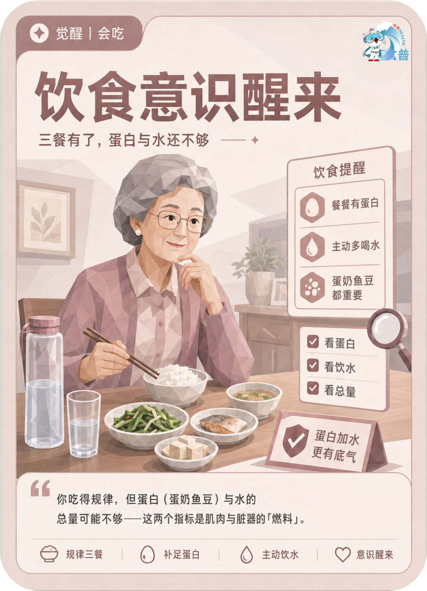

老年人群
觉醒
会吃
E14
饮食意识醒来
三餐有了,蛋白与水还不够
你吃得规律,但蛋白(蛋奶鱼豆)与水的总量可能不够——这两个指标是肌肉与脏器的「燃料」。
手机端可点击“打开原图”后长按图片保存；也可以直接长按上方图卡保存。

三餐有了,蛋白与水还不够
你吃得规律,但蛋白(蛋奶鱼豆)与水的总量可能不够——这两个指标是肌肉与脏器的「燃料」。
手机端可点击“打开原图”后长按图片保存；也可以直接长按上方图卡保存。